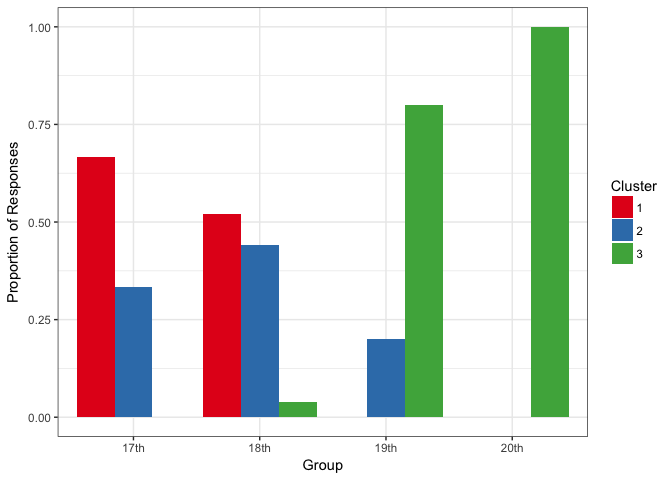

The goal of clustRcompaR is to make it easy to cluster (or group) a series of documents (texts of any length), and to interpret these groups and to describe their frequency across factors, such as between different groups or over time.
You can install the development version of clustRcompaR from GitHub with:
# install.packages("devtools")
devtools::install_github("alishinski/clustRcompaR")You can install the stable release on CRAN with:
install.packages("clustRcompaR")This is a basic example using the built-in inaugural addressess dataset.
First, we use cluster() to cluster the documents into three clusters. We include a new variable, year_before_1900, which we will later use to compare frequencies across clusters. Then we use extract_terms() to view the terms and term frequencies in the two clusters.
First, let’s process the texts.
library(clustRcompaR)
library(dplyr)
#>
#> Attaching package: 'dplyr'
#> The following objects are masked from 'package:stats':
#>
#> filter, lag
#> The following objects are masked from 'package:base':
#>
#> intersect, setdiff, setequal, union
d <- inaugural_addresses
d <- mutate(d, century = ifelse(Year < 1800, "17th",
ifelse(Year >= 1800 & Year < 1900, "18th",
ifelse(Year >= 1900 & Year < 2000, "19th", "20th"))))Next, we cluster the texts.
three_clusters <- cluster(d, century, n_clusters = 3)
#> Document-feature matrix of: 58 documents, 2,820 features (79.6% sparse).
extract_terms(three_clusters)
#> Cluster.1.Terms Cluster.1.Term.Frequencies Cluster.2.Terms
#> 1 in 34.200000 in
#> 2 my 13.866667 their
#> 3 their 12.333333 govern
#> 4 will 11.200000 will
#> 5 govern 9.533333 has
#> 6 peopl 7.200000 it
#> 7 it 7.133333 state
#> 8 nation 7.000000 been
#> 9 has 6.733333 peopl
#> 10 countri 6.533333 nation
#> Cluster.2.Term.Frequencies Cluster.3.Terms Cluster.3.Term.Frequencies
#> 1 77.52941 in 36.692308
#> 2 22.88235 will 16.076923
#> 3 21.41176 nation 12.500000
#> 4 20.29412 us 12.038462
#> 5 20.00000 world 9.807692
#> 6 19.41176 peopl 9.307692
#> 7 18.23529 can 7.769231
#> 8 17.82353 must 7.730769
#> 9 16.05882 america 7.423077
#> 10 14.41176 no 7.192308Then, we use the compare() function to compare the frequency of clusters across a factor, in this case, the century. We can then use the compare_plot() or compare_test() (which uses a Chi-Square test) function.
Here, we can compare the texts.
three_clusters_comparison <- compare(three_clusters, "century")
compare_plot(three_clusters_comparison)